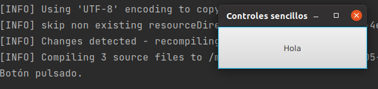

Los componentes de la interfaz gráfica de JavaFX generan eventos cada vez que la persona usuaria interacciona con ellos.
Nuestra tarea es escribir la respuesta para aquellos eventos en los que estemos interesados.
Esta respuesta se basa en el patrón de diseño Observador/Observable.
Los componentes gráficos son Observables que lanzan eventos. Nuestra tarea es escribir el código de respuesta en los observadores registrados como escuchadores del evento producido.
Al último, tienes acceso desde la web de la biblioteca.
En JavaFX, cada vez que la persona usuaria interacciona con los componentes de la interfaz gráfica, se crea un evento, que describe la interacción.
Si, como programadores, queremos escribir código de respuesta a la interacción de la persona usuaria, debemos escribir una clase, o expresión lambda, con el código que implemente la respuesta.
Finalmente, debemos registrar una instancia de la clase escuchadora, o una expresión lambda, como escuchadora del evento.
La secuencia de pasos para dar una respuesta ante un evento en JavaFX es la siguiente:
La interface funcional EventHandler<T extends Event> sólo declara un método:
@FunctionalInterface
public interface EventHandler<T extends Event> extends EventListener {
void handle(T var1);
}
Fíjate en la anotación @FunctionalInterface que sirve para indicarla a Java que el método de la interface se puede utilizar como una expersión lambda.
Fíjate, que con esta interface vamos a poder gestionar cualquier tipo de evento, el tipo concreto de evento lo fijaremos cuando instanciemos la clase que implementa esta interface. JavaFX ya te proporciona un conjunto de eventos, no es necesario que los crees tú.
Veamos cómo escribir la respuesta en el caso de interacción con un botón y una clase escuchadora.
Definimos la clase escuchadora:
private class Escuchadora implements EventHandler<ActionEvent> {
@Override
public void handle(ActionEvent actionEvent) {
System.out.println("Botón pulsada.");
}
}
Importante la interface EventHandler<T extends Event> es genérica, debemos indicar el tipo de evento que queremos escuchar.
Además, esta interface sólo declara un método, es una interface funcional.
Ahora, creamos una instancia y la registramos como escuchadora:
boton.addEventHandler(ActionEvent.ACTION, new Escuchadora());
Cada vez que se pulse el botón, aparecerá en consola el texto "Botón pulsado".
Tenemos una segunda opción, asignar la instancia de la clase escuchadora a la propiedad onAction de Button con el método setOnAction(EventHandler<ActionEvent> escuchadora):
boton.setOnAction(new Escuchadora());
Cada vez que se pulse el botón, aparecerá en consola el texto "Botón pulsado".
Cada botón tiene la propiedad onAction a la que podemos asignar una única escuchadora con el método de comodidad setOnAction(EventHandler<ActionEvent> escuchadora).
Fíjate que con addEventHandler(EventType
Otra diferencia importante es que setOnAction(EventHandler<ActionEvent> value) asigna la escuchadora a una propiedad del botón, con addEventHandler(EventType
Un modo abreviado de hacer lo mismo, pero sin necesidad de crear una clase escuchadora, es crear una clase interna anónima:
boton.setOnAction(new EventHandler<ActionEvent>() {
@Override
public void handle(ActionEvent actionEvent) {
System.out.println("Botón pulsado");
}
});
Fíjate que EventHandler<T extends Event> es una interface, y por lo tanto no se puede instanciar con new.
Lo que está ocurriendo es que estamos definiendo una clase sin nombre (anónima) que implementa la interface EventHandler<T extends Event>, y que estamos instanciando en el momento de su definición.
Aún tenemos un tercer modo de crear la escuchadora, mediante una expresión lambda:
boton.setOnAction(e -> System.out.println("Botón pulsado."));
Comparado con los métodos anteriores, la definición es muy concisa.
Las expresiones lambda son el mecanismo recomendado al definir escuchadoras en JavaFX.
Cuando utilizar cada una de ellas:
¿Cómo hago para reutilizar una expresión lambda con varios componentes?
Button boton = new Button("Hola");
EventHandler<ActionEvent> lambda; // Me guardo la referencia.
boton.setOnAction(lambda = (e -> System.out.println("Botón pulsado.")));
Button adios = new Button("Adios");
adios.setOnAction(lambda);
Me guardo la referencia y la usan el resto de objetos que lo necesiten.
El modelo de programación de JavaFX se basa en el patrón de diseño Observador.
Los componentes gráficos generan eventos cuando la persona usuaria interacciona con ellos.
Escribimos clases escuchadoras, o mejor, funciones lambda, que sean capaces de recibir notificaciones cuando se producen los eventos que nos interesan.